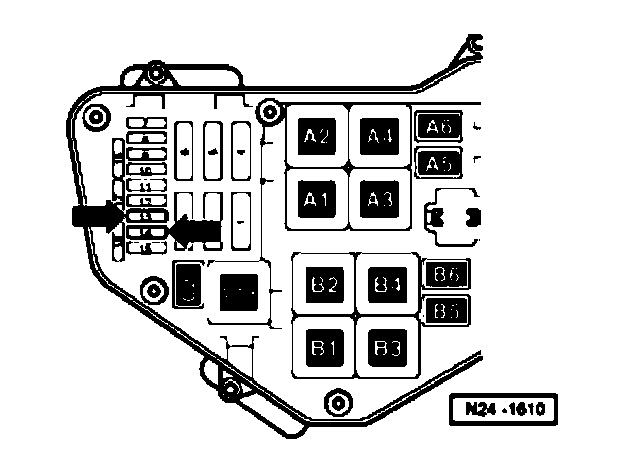
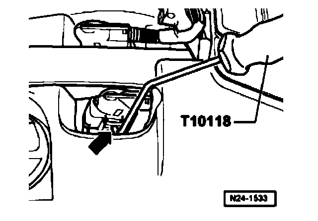

Fuel Injection Servicing
Safety precautions

^ For safety reasons, fuses - 13 - and - 14 - - arrow - must be removed from the fuse holder before opening fuel system because fuel pumps can be activated by door contact switch in driver's door.
^ Fuses - 13 - and - 14 - are located in fuse holder of electric box in plenum chamber on left.
Caution! Fuel supply lines are under pressure! Before opening the fuel system, connect diesel extractor VAS5226 and release pressure.
To prevent injuries to persons and/or damage to the fuel injection and ignition system, note the following:
^ The ignition must be switched off before connecting or disconnecting injection and ignition system wiring or tester cables.
^ Do not touch or disconnect ignition wires when engine is running or turning at starter speed.
Observe the following if test and measuring instruments are required during a test drive:
^ Test and measuring instruments must be secured to rear seat and operated by a 2nd person from this location.
If test and measuring instruments are operated from the front passenger's seat and the vehicle is involved in an accident, there is a possibility that the person sitting in this seat may receive serious injuries when the airbag is triggered.
^ If the engine is to be turned at starter speed, without starting:
- Disconnect connectors from ignition coils 1 through 6.

- To do this, place the assembly tool T10118 against the locking mechanism button - arrow -, and carefully remove the connector.